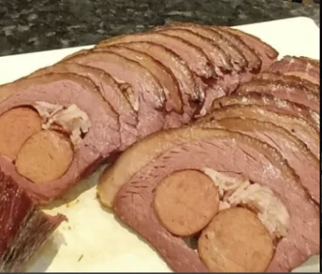
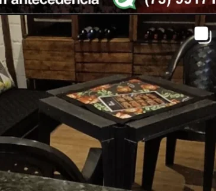

Pratos sob encomenda
Para momentos especiais.
Opções preparadas para encomendas. Fale com a equipe sobre o cardápio atual.

Sabores feitos com cuidado. Pedidos sob encomenda, comidas congeladas e carta de vinhos no litoral de Prado, Bahia.
O Empório DaTerra é parte da vida em Guaratiba. Seu perfil oficial apresenta pratos preparados sob encomenda, opções congeladas, sanduíches, seleção de vinhos e encontros que fazem a região ganhar ainda mais sabor.
A cozinha tem um lado caseiro e generoso: comida para reunir pessoas, levar para casa e dividir com quem importa. O cardápio e as condições de pedido podem mudar, por isso as informações mais atuais ficam no perfil oficial.
Atendimento e pedidos: entre em contato pelo Instagram oficial para confirmar cardápio, dias, horários e disponibilidade.
Um pouco do que o Empório compartilha nas redes. Fotos reais extraídas das publicações fornecidas.
Opções preparadas para encomendas. Fale com a equipe sobre o cardápio atual.

O perfil também apresenta sanduíches e opções práticas para os dias em Guaratiba.

Uma carta de vinhos faz parte da proposta da casa.

Feiras de orgânicos, novidades do cardápio e encontros aparecem entre as histórias que o Empório compartilha. São registros de uma Guaratiba viva e de uma mesa conectada ao lugar.
As imagens de eventos são registros de publicações anteriores, não uma agenda de eventos futuros.
Praia de Guaratiba, Prado, Bahia, CEP 45980-000. Confirme localização e funcionamento pelo Instagram antes de sair.